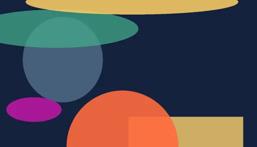
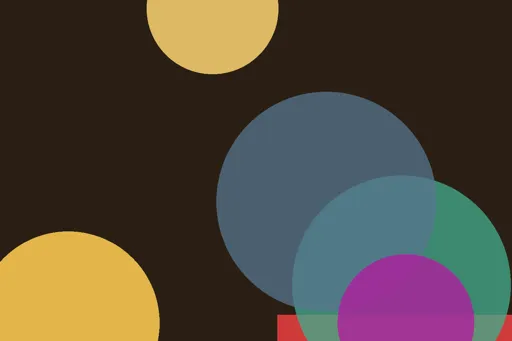
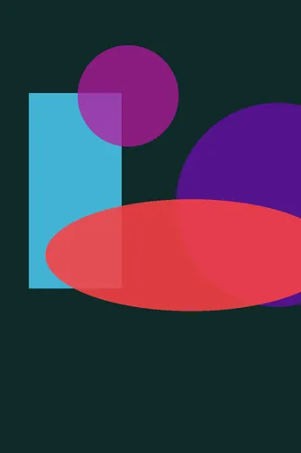
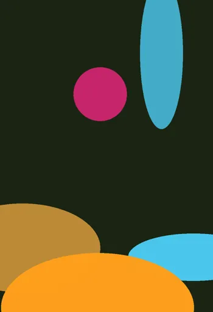
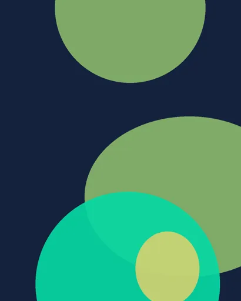
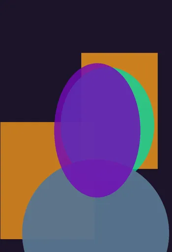

Prompt
Forge
Gallery
Collections
Models
Inspiration
Film
Forge
Studio
Settings
Baserow
Discord
AI
⌕
✕
All platforms
civitai
lexica
x
midjourney
tensorart
seaart
pixai
All models
Flux
SDXL
Illustrious
Midjourney
Kling
Wan
Hunyuan
SD 1.5
Images + video
Images
Videos
All techniques
35mm
50mm
85mm
aerial
anamorphic
atmospheric-haze
blue-hour
character-consistency
cinematic-lighting
crane
crash-cam
deep-focus
dolly
dolly-zoom
double-exposure
dutch-angle
eye-level
film-grain
fisheye
fpv
glitch
golden-hour
handheld
high-angle
high-key
hyperlapse
image-to-video
jump-cut
kaleidoscope
lens-flare
lip-sync
long-exposure
loop
low-angle
low-key
macro
match-cut
morph
motion-blur
nine-grid
one-take
orbit
pan
pov
practical-lights
product-cinematography
rack-focus
reference-workflow
reverse
rim-light
shallow-dof
slow-motion
snorricam
speed-ramp
split-screen
start-end-frame
steadicam
stop-motion
telephoto
tilt
tilt-shift
timelapse
tracking
transition
underwater
volumetric-light
whip-pan
wide-angle
zoetrope
zoom
Any time
Last 24h
Last 7 days
Last 30 days
★ Favorites
NSFW

☆
🔖
character sheet turnaround of a desert scavenger, front side back, consistent character

☆
🔖
wide establishing shot of a lighthouse in a storm, spray across the lens, overcast

★
🔖
★
noir detective in a smoky office, venetian blind shadows, high contrast black and white

☆
🔖
knight in silver armor standing in a wheat field, golden hour, painterly brushwork

☆
🔖
street photography, Tokyo crossing at night, rain reflections, 35mm, available light

★
🔖
★
cinematic portrait of a woman in a rain-soaked neon alley, 85mm, shallow depth of field, volumetric light, wet asphalt reflections, cyan an…